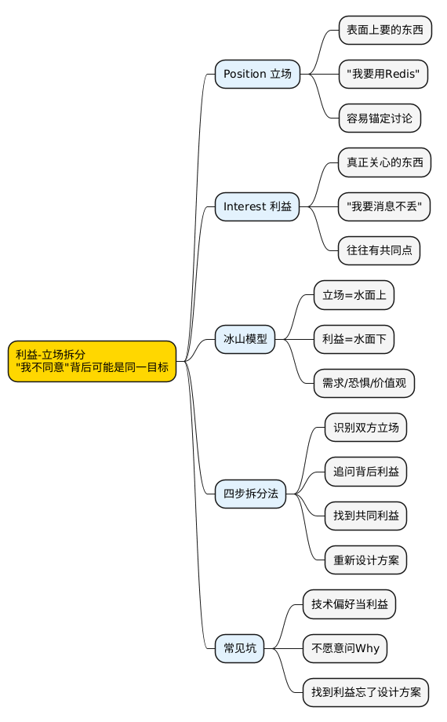

职场工具箱之利益-立场拆分：为什么"我不同意"背后可能是同一目标？
Posted on 一 16 3月 2026 in Journal
| Abstract | 职场工具箱之利益-立场拆分：为什么"我不同意"背后可能是同一目标？ |
|---|---|
| Authors | Walter Fan |
| Category | Journal |
| Version | v1.0 |
| Updated | 2026-03-16 |
| License | CC-BY-NC-ND 4.0 |
📋 大纲
1. 扎心场景：技术选型会吵了一小时 2. What：利益-立场拆分是什么(冰山模型 + 橙子故事) 3. Why：为什么大多数冲突是立场冲突 4. How：四步拆分法 + 三个场景改写 5. 技术人常踩的坑 6. 总结 + 行动清单 7. 思维导图 8. 系列回顾一、扎心场景：吵了一小时，发现咱们想要的是同一个东西
周三下午，技术评审会。
你提议用 Redis Stream 做消息队列。老王当场反对："不行，得用 Kafka。"
你说："Redis Stream 够用了，咱们的量没那么大，Kafka 太重了。"
老王说："Kafka 才是正经的消息队列，Redis 那个是玩具。"
你说："日均消息量才 10 万条，杀鸡用牛刀。"
老王说："现在 10 万，半年后呢？到时候再迁移成本更高。"
来回拉锯了 40 分钟，谁也说服不了谁。就像两个人拔河，绳子纹丝不动，倒是把自己累得够呛。
最后架构师老张问了一句："你们俩到底想解决什么问题？"
你说："我想要消息不丢。"
老王说："我也想要消息不丢，而且要能扛住未来的量。"
老张说："那你们的目标是一样的啊。消息不丢 + 可扩展。咱们看看有没有方案能同时满足？"
最后的方案：先用 Redis Stream 快速上线，但接口层做一层抽象，后续量上来了可以无缝切换到 Kafka。
吵了 40 分钟的 "Redis vs Kafka"，其实是在吵立场，不是在吵利益。
二、What：利益和立场到底有什么区别
立场 vs 利益
| 概念 | 定义 | 举例 |
|---|---|---|
| Position(立场) | 你表面上要的东西——你的"解决方案" | "我要用 Redis" |
| Interest(利益) | 你真正关心的东西——你的"需求" | "我要消息不丢，而且部署简单" |
立场是 "What"——你要什么。 利益是 "Why"——你为什么要。
用咱们写代码的话说，立场是 implementation(具体实现)，利益是 interface(接口/需求)。两个人可以用不同的 implementation 满足同一个 interface。争论 implementation 没意义，先对齐 interface 才是正事。——面向接口编程嘛，这道理写代码时都懂，跟人沟通时反而忘了。
冰山模型
┌─────────────┐
│ 立场 │ ← 水面上：看得见的("我要用Redis")
│ Position │
─────┴─────────────┴─────── 水面线
│ 利益 │ ← 水面下：看不见的
│ Interest │
│ │
│ 需求 │ (消息不丢、部署简单)
│ 恐惧 │ (怕系统扛不住、怕背锅)
│ 价值观 │ (技术选型要务实/要前瞻)
└─────────────┘
大多数争论发生在水面上。但真正决定结果的，是水面下的东西。
经典案例：两姐妹争一个橙子
这是《Getting to Yes》里的经典故事：
两个姐妹争一个橙子。妈妈"公平"地把橙子切成两半，一人一半。
结果呢？姐姐把果肉榨了汁，皮扔了。妹妹把皮拿去做蛋糕，果肉扔了。
如果妈妈多问一句"你们要橙子干什么"，就会发现：姐姐要果肉，妹妹要皮。一个橙子可以 100% 满足两个人。
可她们只在"立场"层面沟通("我要橙子")，结果两个人都只拿到了 50%。
一句话：明明可以双赢，硬是打成了零和。这就是立场冲突的代价。
三、Why：为什么大多数冲突是立场冲突
咱们习惯用"方案"沟通，而不是用"问题"沟通
技术人在这一点上尤其"出色"。
你不会说"我想要消息不丢"，你会直接说"我要用 Kafka"。因为你已经在脑子里把问题分析了一遍，直接给出了结论。
但对方不知道你的推理过程。他只看到你的结论，然后用他自己的推理过程得出了一个不同的结论。
两个结论打架，就变成了立场之争。就像两个程序员各自在本地跑通了代码，一合并就冲突——不是代码有问题，是没有先对齐 spec。
这在软件工程里叫"过早优化"(premature optimization)。你还没对齐需求，就开始争论实现方案了。先写 spec，再写 code。先对齐问题，再讨论方案。
锚定效应
心理学研究表明：先说出来的立场会锚定整个讨论的方向。
你说"用 Redis"，讨论就变成了"Redis 行不行"。老王说"用 Kafka"，讨论就变成了"Redis vs Kafka"。
但真正该讨论的是："咱们的消息队列需要满足什么条件？"
一旦立场被锚定，讨论就从"解决问题"滑向了"谁对谁错"。
面子问题
改立场 = 认输。这是人之常情。
你说了"用 Redis"，如果最后用了 Kafka，你会觉得"我输了"。即使 Kafka 确实更合适，心里也不舒服。
但如果讨论的是利益层面——"咱们需要消息不丢 + 可扩展"——那最后不管用什么方案，都不存在"谁输了"的问题。
在利益层面讨论，没有输家。在立场层面讨论，至少有一个输家。 这笔账，划算不划算，一目了然。
四、How：四步拆分法
步骤
第一步：识别双方立场("你要什么？我要什么？")
第二步：追问背后利益("你为什么要这个？"——连问 3 个 Why)
第三步：找到共同利益("咱们都想要什么？")
第四步：基于共同利益重新设计方案
核心提问句式，就这三句，够用了：
- "这个方案帮你解决什么问题？"
- "你最担心的是什么？"
- "如果不用这个方案，你觉得什么条件必须满足？"
实战场景改写
场景 1：技术选型争论(Redis vs Kafka)
❌ 立场对抗版：
你："用 Redis Stream，轻量够用。" 老王："不行，Kafka 才靠谱。" 你："咱们量没那么大。" 老王："你怎么知道以后量不大？" (循环 40 分钟，不了了之)
✅ 利益拆分版：
你："老王，咱们先不说用什么，先对齐一下需求。我理解咱们需要：①消息不丢 ②延迟 < 100ms ③日均 10 万条。你还有什么补充？" 老王："我还担心扩展性，万一半年后量涨 10 倍呢。" 你："好，那需求是：消息不丢 + 低延迟 + 当前 10 万条 + 未来可扩展到 100 万条。基于这四个条件，咱们看看哪个方案最合适？"
结果：讨论从 "Redis vs Kafka" 变成了"哪个方案满足这四个条件"，10 分钟就有结论了。
场景 2：产品要加功能 vs 你要还技术债
❌ 互相否定版：
产品："这个季度必须上推荐功能，老板要的。" 你："不行，数据库快扛不住了，必须先做分库分表。" 产品："用户看不到分库分表，老板只看功能。" 你："数据库崩了什么功能都没有。" (升级到老板，老板说"都做"，然后你加班到死)
✅ 利益拆分版：
你："我理解推荐功能对 DAU 很重要(先认可对方利益)。我这边的担心是，数据库现在的慢查询已经影响了首页加载速度，P99 从 200ms 涨到了 800ms(摆事实)。如果不处理，推荐功能上了也会卡(共同利益：用户体验)。" 产品："那你的意思是先优化数据库？" 你："不一定。咱们可以这样：推荐功能先用缓存方案做一版，不依赖复杂查询，两周能上。同时我用两周做数据库优化。四周后推荐功能切到正式方案。功能和性能都不耽误。"
关键：你们的共同利益是"用户体验好"。产品要功能是为了用户体验，你要还技术债也是为了用户体验。找到这个交集，方案自然就出来了。
场景 3：两个项目抢同一个人
❌ 升级到老板版：
A 项目负责人："小陈这个季度必须在我这边，我们要上线。" B 项目负责人："小陈是唯一懂支付模块的人，我们也离不开。" (两人找老板，老板说"你们自己协调"，然后小陈被两边拉扯)
✅ 利益拆分版：
A："我需要小陈，是因为他熟悉用户系统的数据模型，我们的新功能要改用户表。" B："我需要小陈，是因为支付模块只有他能改，下个月有合规审计。" 协调者："那 A 的利益是'有人能改用户表'，B 的利益是'支付模块能通过审计'。小陈前两周在 B 做支付审计(时间紧迫)，同时花两天给 A 的同事做用户表的知识转移。第三周起 A 的同事就可以独立改用户表了。"
你看，A 要的不是"小陈这个人"，而是"有人能改用户表"。把立场拆开，资源冲突就变成了排期问题。
对比表
| 维度 | 立场对抗 | 利益协商 |
|---|---|---|
| 讨论焦点 | "用 Redis 还是 Kafka" | "咱们需要什么" |
| 沟通方式 | 各自陈述结论 | 追问背后原因 |
| 情绪 | 对立、防御 | 协作、探索 |
| 结果 | 一方妥协或僵持 | 可能找到双赢方案 |
| 关系影响 | 赢的人爽，输的人记仇 | 双方都觉得被尊重 |
技术人常踩的坑
坑 1：把技术偏好当利益
"我喜欢 Go"不是利益，"我需要高并发性能"才是利益。"我习惯用 Vim"不是利益，"我需要高效的编辑体验"才是利益。
问自己一句：如果有另一个方案也能满足我的需求，我还会坚持吗？如果会，那你坚持的是偏好，不是利益。偏好固然重要，可它不该成为说服别人的论据。
坑 2：不愿意问 Why
技术人觉得问"你为什么要这个"是在质疑对方。其实不是。换个说法就好了：
❌ "你为什么非要用 Kafka？"(听起来像质疑)
✅ "Kafka 帮你解决什么问题？我想理解一下你的考虑。"(听起来像好奇)
同一个意思，语气不同，效果天差地别。
坑 3：找到共同利益后忘了设计新方案
"哦，咱们都想要消息不丢，太好了！"——然后呢？
找到共同利益只是第一步。你还得基于共同利益重新设计一个方案，而不是回到原来的两个方案里选一个。
最好的方案往往不是 A 也不是 B，而是 C——一个你们之前都没想到的方案。就像 Git 的 merge 一样，最好的结果不是 theirs 也不是 ours，而是一个新的 commit。
五、总结 + 行动清单
利益-立场拆分，目的无他，就一句话：别急着讨论"怎么做"，先对齐"为什么做"。
下次遇到分歧，先问一句："咱们各自想解决什么问题？"
你会发现，大多数时候，你们要的不是同一个方案，但大概率是同一个结果。
行动清单
- [ ] 回忆一次你和同事的争论，分别写出双方的立场和利益
- [ ] 下次技术评审，先花 5 分钟对齐"咱们要解决什么问题"
- [ ] 练习提问句式："这个方案帮你解决什么问题？"
- [ ] 当你发现自己在坚持一个方案时，问自己"我是在坚持利益还是偏好？"
- [ ] 找到共同利益后，花 10 分钟一起设计新方案，别从旧方案里二选一
💡 立场是 implementation，利益是 interface。面向接口编程，不要面向实现编程。——写代码如此，做人亦然。
思维导图
@startmindmap
<style>
mindmapDiagram {
node { BackgroundColor #FAFAFA }
:depth(0) { BackgroundColor #FFD700 }
:depth(1) { BackgroundColor #E3F2FD }
:depth(2) { BackgroundColor #F5F5F5 }
}
</style>
* 利益-立场拆分\n"我不同意"背后可能是同一目标
** Position 立场
*** 表面上要的东西
*** "我要用Redis"
*** 容易锚定讨论
** Interest 利益
*** 真正关心的东西
*** "我要消息不丢"
*** 往往有共同点
** 冰山模型
*** 立场=水面上
*** 利益=水面下
*** 需求/恐惧/价值观
** 四步拆分法
*** 识别双方立场
*** 追问背后利益
*** 找到共同利益
*** 重新设计方案
** 常见坑
*** 技术偏好当利益
*** 不愿意问Why
*** 找到利益忘了设计方案
@endmindmap

系列回顾
职场工具箱系列，每篇一个工具，现学现用：
- 4D 总结法
- 黄金圈法则
- TNB 表达模型
- FAB 提案法
- STAR 面试法
- 同理心三方法
- 5W1H + 8C1D
- 艾森豪威尔矩阵
- PDCA 循环
- SMART 原则
- 领导力
- 逻辑树
- 解决问题五步法
- 5 个 Why
- 沟通四要素 CARE
- 金字塔原理
- 三点法
- DACI
- 四线复盘法
- RAPID
- 5S 问题处理法
- SWOT 自我定位
- AARRR 漏斗
- 第一性原理
- RACI
- 非暴力沟通
- SCAMPER
- MVP 思维
- ABC 情绪理论
- AI Agent 学职场英语
- 向上管理
- OODA 循环
- OKR
- MoSCoW 优先级
- RICE / ICE 评分
- 里程碑计划
- 验收标准 DoD
- 范围管理
- SBI 反馈法
- 困难对话
- BATNA 谈判
- 利益-立场拆分(本篇)
- Radical Candor
扩展阅读
- Roger Fisher, William Ury —— 《Getting to Yes》(利益-立场拆分的理论源头)
- William Ury —— 《Getting Past No》(当对方不配合时怎么办)
- Chris Voss —— 《Never Split the Difference》(FBI 谈判专家的实战技巧)
- Adam Grant —— 《Think Again》(如何改变自己和别人的想法)
本作品采用知识共享署名-非商业性使用-禁止演绎 4.0 国际许可协议进行许可。